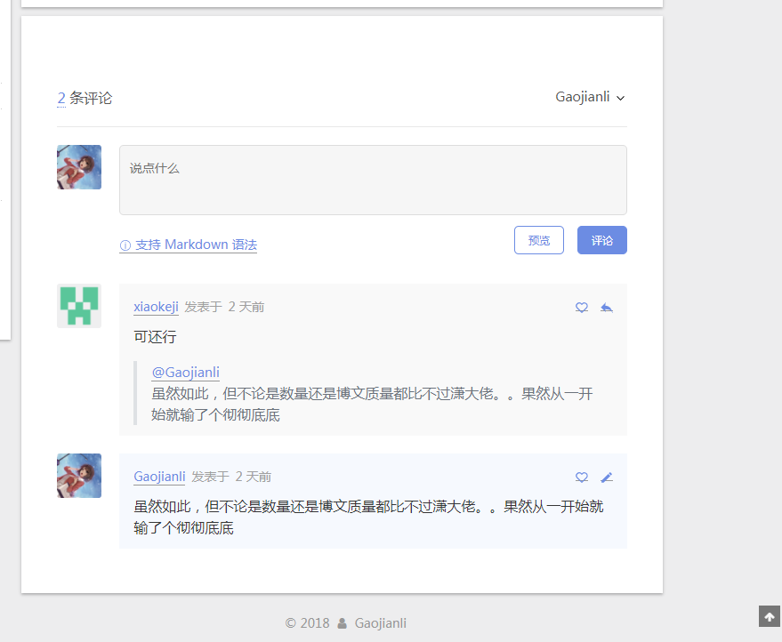
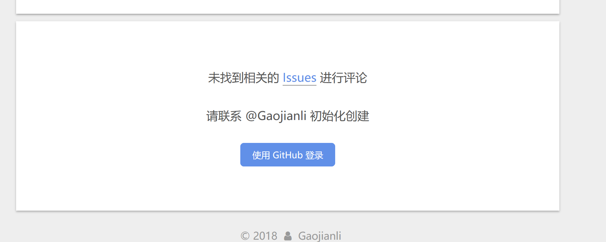
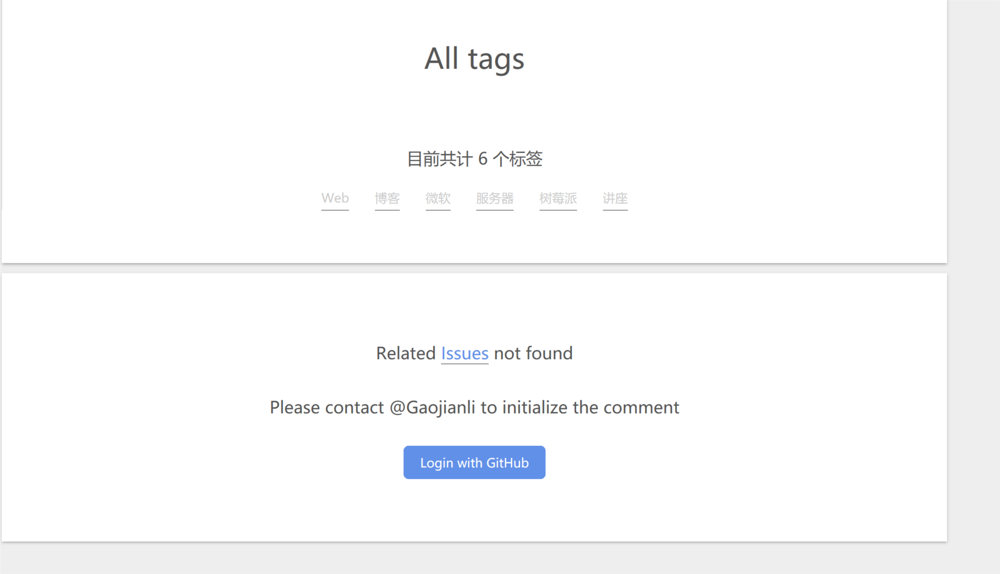

前言
一直以来都想要给自己的博客弄个评论系统，但是hexo作为一个静态博客，本身是不可能具有这种功能的，只能仰仗第三方插件。这方面的插件也非常多，比如disqus、vline等。但这些插件都存在或多或少问题，比如注册麻烦或者干脆国内不能访问。考虑到我家长城宽带的现实，必须选择一个在各地都能流畅访问的插件，这里我选择了Gitalk.
简介
先来看看官网的简介吧：
Gitalk is a modern comment component based on GitHub Issue and Preact.
顾名思义，这是一个基于GitHub的issue功能构建的评论系统。为了部署方便，我的博客本身也是托管在GitHub上的，而且其CDN也遍布全球各地，即使是长城宽带也能保证访问。此外相信本文的绝大多数读者也都具有GitHub账号，这也省去了大家注册的麻烦。因此，从各种意义上来说，它都是一个理想的插件。
安装
官方提供了2种安装方式：直接引用和npm。
直接引用：
1 | <link rel="stylesheet" href="https://cdn.jsdelivr.net/npm/gitalk@1/dist/gitalk.css"> |
npm:
1 | npm install |
1 | import 'gitalk/dist/gitalk.css' |
就我个人而言我是想使用npm的，但是无奈才疏学浅，研究了半天也没找到该怎么import，只好采用第一种方法了。如果读者找到了方法，还望在评论区不吝赐教。
使用
创建OAuth应用
既然是要让大家在issue里面进行提问，肯定是需要GitHub授权的，因此我们需要先注册一个OAuth应用。虽然理论上来说随便新建一个仓库即可，但是我既然已经有博客这一仓库了，干脆就直接把它注册成GitHub应用算了。
注册链接在这里，Application name填写你的仓库名，记得Homepage URL和Authorization callback URL一栏一定要填写博客网址，否则授权后无法正常跳转。完成后请记录下clientID和clientSecret，待会儿要用。已经创建的OAuth应用可以在设置查看。
魔改主题配置文件
主题方面，NexT本身就支持了许多评论插件，但很不幸，Gitalk并不在其中。幸运的是NexT使用统一接口接入评论服务，因此我们只需要修改模板文件即可。
拓展阅读：Swig(swig-templates)不是SWIG (Simplified Wrapper and Interface Generator) ，别弄混了。前者是模板引擎，后者是“简化包以及接口生成器”。
新增Gitalk的模板文件
定位到next/layout/_third-party/comments目录下，新建一个名叫gitalk.swig的文件。hexo渲染模板的时候会自动读取该目录下的index.swig文件，然后根据配置文件里面定义的变量和模板文件里面的语句进行条件渲染。因此我们新建的模板文件也应该依葫芦画瓢：
1 | {% if not (theme.duoshuo and theme.duoshuo.shortname) and not theme.duoshuo_shortname %} |
上面的代码会在渲染时插入到HTML文件里，因此必须注意script文件引入的顺序，否则可能会出现undefined等错误。
随后在同目录下的index.swig文件末尾追加includegitalk.swig:
1 | {% include 'gitalk.swig' %} |
不过还没完，上面我们只是新增了Gitalk的调用，还得把它放到页面下方评论区才行。打开next/layout/_partials/comments.swig，在valine的后面追加：
1 | {% elseif theme.gitalk.enable and theme.gitalk.clientID and theme.gitalk.clientSecret %} |
修改配置文件
根据上面的代码我们可以看出，是否渲染主要是根据theme.gitalk.enable和theme.gitalk.distractionFreeMode这两变量来的，并且Gitalk类需要的参数还有theme.gitalk.clientID和theme.gitalk.clientSecret等，那么相应的配置文件应该怎么写就不言而喻了，在主题配置文件_config.yml里面新增如下代码：
1 | # Gitalk |
虽然理论上来说放哪里都成，不过为了方便管理还是和其他评论插件放到一起比较好。其中Admin字段是文章未初始化时显示的管理员的名字。
保存之后运行hexo g应该就可以看到效果了。不过这样默认背景是透明的，显得非常突兀，因此我决定给它加上背景。直接调用内置的的class，再略微调整下margin就大功告成了：
1 | {% elseif theme.gitalk.enable and theme.gitalk.clientID and theme.gitalk.clientSecret %} |
效果展示
未登录：
商业互吹的评论区:

一些坑
新发的文章可能出现如下的情况:

可能是GitHub的限制吧，其他人通过Gitalk是没法主动创建issue的，换句话说，需要“初始化”。初始化的方法也非常简单：用管理员账号登录GitHub后打开相应的博文即可。
追加：一个小Bug
自从撰写这篇文章之后已经过去了许多时间，前不久无意中发现了一个小Bug，那就是在tags页面hexo也渲染了评论区:

既然是问题那就要解决，正巧今天中午无事，就来好好看看吧。
首先我们要知道，NexT主题使用了各种各样的库，其中就有大名鼎鼎的jQuery，虽然JQ是著名的“JQ一时爽，维护火葬场”，但正常人没事也不会去修改主题文件。那么我就图个省事，直接用jQ进行修改吧。
思路大概如下：
- 修改
gitalk.swig，判断当前页面是否为tags页面 - 若是，直接移除id为
gitalk-container的div即可
既然是要判断页面是否存在，因此需要寻找特征元素，在这里我选取的是div.tag-cloud这一元素，因此直接判断是否存在即可，最终代码如下:最终效果可以点击这里1
2
3
4
5
6
7
8
9
10
11
12
13
14
15
16
17
18
19
20
21
22
23{% if not (theme.duoshuo and theme.duoshuo.shortname) and not theme.duoshuo_shortname %}
{% if theme.gitalk.enable %}、
<link rel="stylesheet" href="https://unpkg.com/gitalk/dist/gitalk.css">
<script src="https://unpkg.com/gitalk/dist/gitalk.min.js"></script>
<script type="text/javascript">
if($(".tag-cloud").length===0)//判断元素是否存在
{
var gitalk = new Gitalk({
clientID: '{{theme.gitalk.clientID}}',
clientSecret: '{{theme.gitalk.clientSecret}}',
id: '{{page.title}}',
repo: '{{theme.gitalk.repo}}',
owner: '{{theme.gitalk.owner}}',
admin: '{{theme.gitalk.admin}}',
distractionFreeMode: {{theme.gitalk.distractionFreeMode}},
})
gitalk.render('gitalk-container')
}
else if($(".page-home").length===0) //判断是否为主页
$("#gitalk-container").remove()//移除相应元素
</script>
{% endif %}
{% endif %}
では、諸君は。再更新：2018-07-25
经过Xice的提醒，哪儿那么麻烦，直接在tags/index.md里面添加comments: false不就完了！